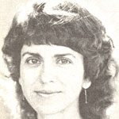
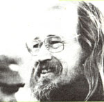

Newsworthies
Briefs on Frances Moore Lappe, Stephen Ganskin and Plenty.
By the Mother Earth News editors
May/June 1981
"Food was a launching point for many changes in my life," says Frances Moore Lappé, author of Diet for a Small Planet (the overnight bestseller about complementary vegetable proteins, which sold more than a million copies in the early 1970's). Since the publication of that nutritional landmark, Ms. Lappe has dedicated both words an d actions to the cause of eliminating world hunger. Along with Joe Collins, the optimistic Californian has written several volumes on this problem, which include Food First: Beyond the Mirth of Scarcity ( a compelling and painstakingly researched examination of the causes of world hunger) . . . Aid as Obstacle (a myth-shattering expose of overseas relief programs) . . . and What Can We Do! Food and Hunger: How You Can Make a Difference (a collection of interviews with antihunger activists).
In all of her works, the author links the growing famine in the Third World with the increasing concentration of agricultural land ownership in the United States. She also outlines alternative policies which would benefit both family farmers in North America and malnourished people in underdeveloped countries. Among Lappe's books, Food First in particular has had a powerful effect on traditional thinking about diet and hunger. In fact, the Spanish-language edition of that book sparked such controversy in Mexico that it was instrumental in convincing President Lopez Portillo to call for a complete reversal of his nation's food policy.
In addition to her literary efforts, Ms. Lappe cofounded-in 1975-the San Francisco-based Institute for Food and Development Policy. The organization's primary goal, it seems, is to stimulate an active response to the world food crisis by emphasizing what individuals can do to change the situation lie have helped turn people from a simple charity response toward an attempt to tackle the causes of hunger," explains Lappe
Among other projects, the IFDP is cur rently sponsoring a comprehensive analysis of global pesticide dumping . . . examining the threat to food supplies in the United States that's posed by our own agricultural export boom . . . completing an investigation of health-endangering birth control techniques promoted abroad by U.S.-funded agencies .. . and conducting studies of food and farming programs in Cuba and Nicaragua.
Besides all that activity, Ms. Lappé has also found time to prepare the tenth anniversary edition of Diet for a Small Planet. Conceived as the chronicle of a decade of change in American food consciousness, the new book will appear this fall.- Frances Newell.
STEPHEN GASKIN AND PLENTY
The good work done by PLENTY-a volunteer aid agency founded in 1974 and operated by Stephen Gaskin and other members of The Farm (see "A Good Look at The Farm" in MOTHER NO. 62, page 138 ... turn to page 116 for back issue ordering information)-was recognized late last year, when the group received the first annual Right Livelihood Award, an "alternative Nobel prize" given out on the eve of the regular Nobel presentations.
The new award was established by Swedish stamp dealer Jacob von Uexkull, because-as he explains-the traditional Nobels "reward the wrong kind of knowledge. Solutions to world problems are not found in dehumanizing technology and blind progress. The traditional practical skills that are being forgotten should be encouraged." According to von Uexkull, his award "recognizes that the materially poor hold the key to much of the ancient human wisdom, and so it is intended to support those who have invented and developed the practical means where-by traditional societies can maintain their dignity and cooperative values".
In presenting the accolade to Gaskin (who traveled to Stockholm to accept the prize for PLENTY), von Uexkull noted that PLENTY volunteers, handpicked members of The Farm who live in the villages with the people they help, "have come to be accepted and trusted, and have been able to bridge the gap between good intentions and practical help". He also praised The Farm for creating and sharing-through the activities of PLENTY-a lifestyle that "treads lightly on the earth".
The dedicated workers have set up relief projects in several developing countries anti in American cities: Some of their recent undertakings include establishing a free ambulance service in the South Bronx . . . setting up a rural reforestation effort in Lesotho . . . promoting soybeans as a viable crop in Guatemala . . . and operating solar-powered radio networks in Bangladesh. By working directly with Third World peoples, PLENTY aims to teach and transfer the back-to-the-land knowledge that Farm dwellers have gained from their own experience at the 1,100-member commune.
The $50,000 cash prize which accompanies the Right Livelihood Award was shared with Hassan Fathy, an 80-year-old Egyptian architect who established the International institute of Appropriate Technology in Tunisia.-JM.
IN BRIEF . . .
Reach for the Sun, a DOE-f'unded film on solar energy and conservation that will air this summer on public television, features such luminaries as PAM DAWBER and RON HOWARD .... In her newest role, that of goodwill ambassador for UNICEF, actress LIV ULLMANN recently toured refugee camps in famine-stricken East Africa .... Writer and environmentalist CLEVELAND AMORY is heading a drive by the Fund for Animals (a New York anticruelty society) to collect one million signatures on a petition asking Congress to elevate the wolf to companion status with the bald eagle, as a symbol of our country's need to preserve its wild environment .... Folksinger PETE SEEGER (see Newsworthies in MOTHER NO. 50 for more on his conservation activities) is a committed opponent of nuclear energy and lives in a wood-heated house on the Hudson River, where the musician and his wife grow produce in their passive solar greenhouse .... The founder of the original Earth Day, former senator GAYLORD NELSON of Wisconsin-who fought actively for important environmental legislation in the past decade-has taken off a new challenge: the chairmanship of The Wilderness Society .... The profit from jazzman PAUL WINTER's newest album, entitled Callings, will be used to support the efforts by Greenpeace and other activist groups to stop the annual slaughter of baby harp seals by Canadian fur hunters.- J.M.
 |
 |
 |